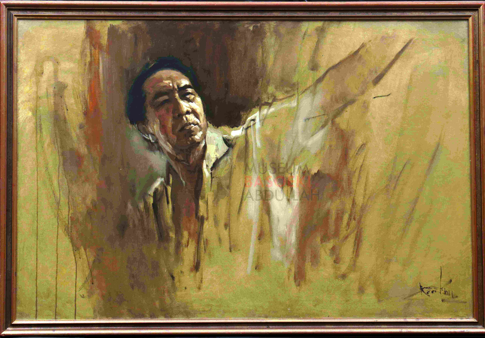

HIGHLIGHTS





Jelajahi ruang seni dari mahakarya sang legenda seniman Basoeki Abdullah
Plan Your Visit
Museum Basoeki Abdullah didirikan pertama kali pada 25 September 2001 di Jalan Keuangan Raya No. 19, Cilandak Barat, Jakarta Selatan!
Basoeki Abdullah pernah melukis lebih dari 500 karya sepanjang hidupnya!


Potret Diri
Pemandangan Alam
Potret Tokoh GNB
Potret Wanita
Karya Realisme
Karya Basoeki Abdullah pernah dipamerkan di Paris pada tahun 1950!